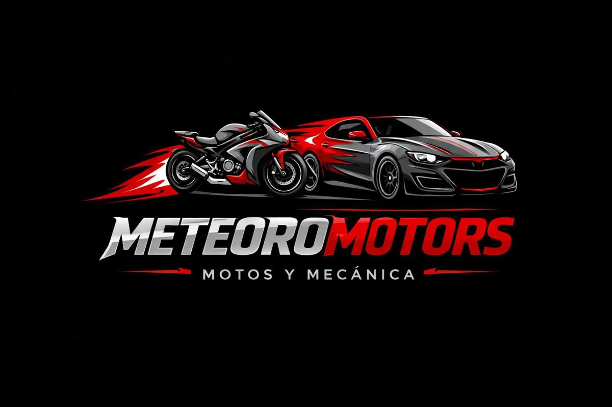
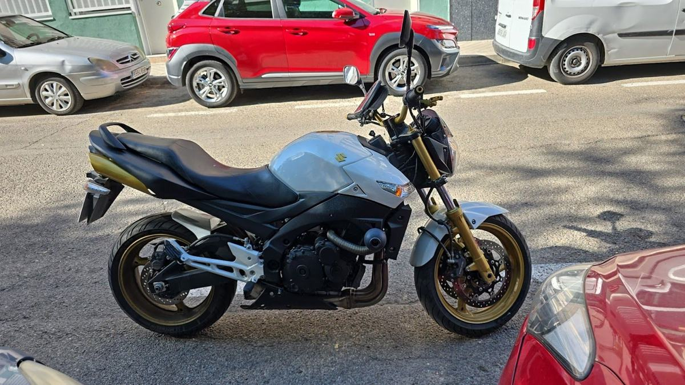
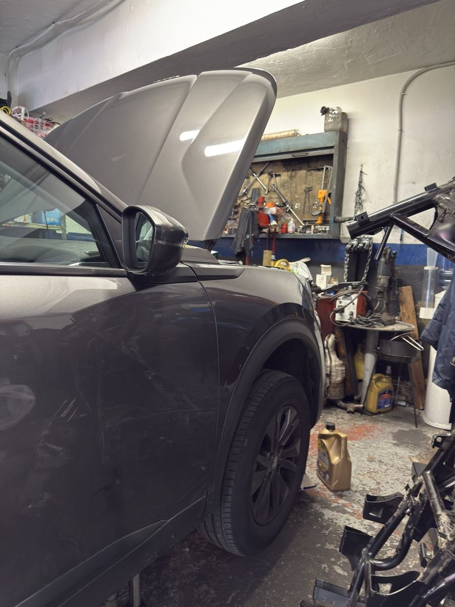

Taller de motos y coches en la calle José María Pemán, Carabanchel. Rápidos, claros con el precio y con una de las mejores notas del barrio.
Cita por WhatsAppPrecios
4,970 reseñas en Google

| Lunes | 9:00–14:00, 16:00–20:00 |
|---|---|
| Martes | 9:00–14:00, 16:00–20:00 |
| Miércoles | 9:00–14:00, 16:00–20:00 |
| Jueves | 9:00–14:00, 16:00–20:00 |
| Viernes | 9:00–14:00, 16:00–20:00 |
| Sábado | Cerrado |
| Domingo | Cerrado |